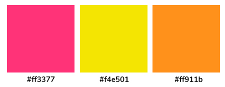

ELECCIONES
Tipografía:
NUNITO
ABCDEFGHIJKLMNÑOPQRSTUVWXYZ
abcdefghijklmnñopqrstuvwxyz
1234567890 !"·$%&/()=?¿"
Tipografía:
SCHOOLBELL
ABCDEFGHIJKLMNÑOPQRSTUVWXYZ
abcdefghijklmnñopqrstuvwxyz
1234567890
!"·$%&/()=?¿"
Cromática:
La paleta cromática busca hacer referencia al personaje y su personalidad, como por ejemplo el amarillo (felicidad), el rosa por su unicornio de peluche. También hay que tener en mente que es una juguetería entonces tiene que tener colores vibrantes.